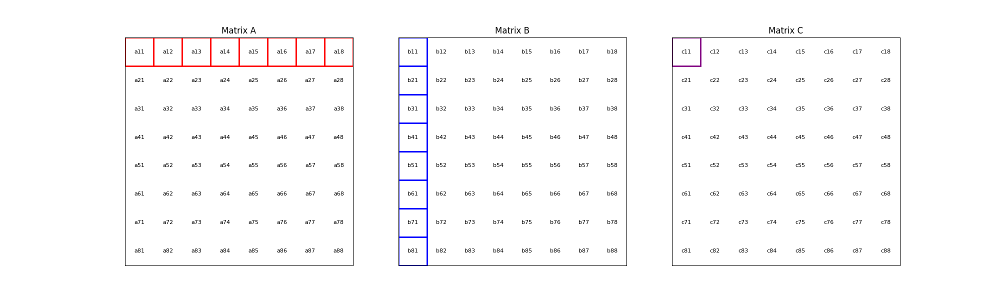

CPU Matrix Multiplication from Scratch in C¶
Highlights
Matrix multiplication is fundamental in deep learning, acting as the primary mechanism for executiong computations in neural networks. This blog post explores matrix multiplication using C to achieve performance comparable to Python’s NumPy and explores detailed optimizations that leverage C’s low-level capabilities.
We demonstrate the performance evolution on an AWS c7a.32xlarge EC2 instance through the following implementations using 32-bit precision:
Baseline with Python/NumPy: ~3,500 GFLOPS, using this implementation for comparison with our C code.
Naive C Approach: ~25 GFLOPS, starting with a simple scalar implementation.
Optimized Scalar C: ~500 GFLOPS, optimizing the naive scalar implementation using tiling, blocking, and loop unrolling.
Vectorized C Operations: ~3,000 GFLOPS, leveraging vectorized instructions for enhanced performance.
These results demonstrate the effectiveness of implementing matrix multiplication from scratch in C, achieving performance levels close to those of Python’s NumPy.
Get all of the code in this repo.
Introduction¶
Matrix multiplication is a core computational operation in machine learning, particularly in deep learning and neural networks. Multiplying matrices is important for translating and scaling input data across various computational structures, a key step in processing interactions of data features within models architectures. Optimizing computational efficiency and accuracy during both model training and inference phases directly relies on fast matrix multiplication.
This blog explores building C implementations of CPU matrix multiplication from scratch, focusing on efficient algorithms and low-level optimizations. By working with C, we gain insights into performance enhancements often hidden by high-level libraries, critical for scaling matrix multiplication calculations for transformer based models to handle large volumes of computations.
Why is Matrix Multiplication Important?¶
Matrix multiplication is essential to neural network computations, particularly in forward and backward propagation.
Forward Propagation: Matrix multiplication combines input data with learned weights, producing activations that flow through the network.
Backward Propagation: Matrix multiplication helps calculate gradients, enabling the network to update its weights and learn from errors.
The efficiency of matrix multiplication directly impacts the speed and scalability of neural network training and inference.
Matrix multiplication is vital in many machine learning domains, including natural language processing, computer vision, and audio processing. It is central to transforming input data, computing activations, and updating model parameters. These domains heavily rely on transformer architectures, where matrix multiplication powers self-attention mechanisms and feedforward networks, enabling the efficient computation of attention weights and data transformation through network layers.
As model sizes grow, computational demands increase significantly. Though no longer at the cutting edge, architectures like GPT-2 and GPT-3 still involve millions of matrix multiplications across multiple layers, attention mechanisms, embedding layers, position-wise feedforward networks, and output linear layers, highlighting the significant computational load requred to process and propagate inputs, activations, and gradients through these complex networks.
Optimizing matrix multiplication is therefore critical for improving the efficiency of large-scale models. It directly affects training time, resource consumption, and the ability to scale to larger datasets and model sizes. Understanding and optimizing this operation is key to advancing the capabilities of machine learning models while managing computational resources effectively.
Matrix Multiplication on CPUs Written in C¶
Why aren’t we using GPUs?
Starting with CPUs helps establish a foundational understanding of matrix multiplication and optimization techniques.
Implementing matrix operations on CPUs helps us better understand performance optimization challenges and prepares us for future GPU implementations.
Why aren’t we using Python?
C provides low-level access to system resources and control over execution, ideal for optimizing performance in computationally intensive tasks.
Building an implementation of matrix multiplication in C improves understanding of the memory hierarchy and optimizes access patterns, which are important for high-performance matrix operations.
We can compare our C implementation to Python’s NumPy to benchmark performance to enhance our understanding of matrix multiplication and optimization techniques.
Benchmarking Setup and Code Organization¶
Matrix Configuration and Benchmarking Strategy¶
Our implementation performs matrix multiplication using the formula C = A x B, where both matrices A and B are square matrices of size N × N. We set N to a static size of 8,192, simplifying the implementation and laying the groundwork for future extensions to non-square matrices. By defining N with a preprocessor C macro (#define N 8192), we can enable aggressive compiler optimizations and ensure consistent runtime behavior.
In this setup, we are not implementing separate kernels with varying block sizes because each matrix is fixed at N × N. A kernel typically refers to an optimized code block designed for flexible execution across varying data sizes or hardware conditions. Since N is static in our implementation, the complexity of multiple kernels is unnecessary, allowing us to focus on optimizing for a single, fixed configuration.
Memory Requirements¶
With N = 8,192, each matrix contains 67,108,864 elements. Using 32-bit floating-point precision (often referred to as “single precision” or “FP32”), the size of each matrix (A, B, and C) is calculated as follows:
This results in a total memory requirement of approximately 805 MB for all three matrices.
Computational Complexity¶
Calculating the computational effort for matrix multiplication involves determining the total number of floating point operations (FLOPs) needed. When multiplying two \(N \times N\) matrices, the resulting matrix is also \(N \times N\) (\(N^2\) elements). Each element is the result of a dot product between a row from the first matrix and a column from the second matrix. This involves:
Multiplications: Each element requires multiplying \(N\) pairs of numbers (one from the row and one from the column).
Additions: The products from the multiplications are then summed together, requiring \(N - 1\) additions (adding two numbers requires one addition, adding three numbers requires two additions, etc).
Thus, the total number of FLOPs is calculated as:
For large matrices, the \(2N^3\) term contributes primarily to the total FLOPs, so it is often used to estimate the computational effort. This simplifies to:
This simplification highlights how the computational effort grows with the size of the matrices. For our chosen matrix size of 8192 x 8192, this results in:
This large number of operations underscores the computational intensity of large-scale matrix multiplication and highlights the importance of our optimization efforts. It is also important to note the distinction between FLOPs, which measure the total operations required, and FLOPS (Floating Point Operations Per Second), which indicate the system’s performance capability.
Cache Considerations¶
We chose this large N value (8,192) to represent a realistic problem size for our matrix multiplication. With our matrix size of approximately 268MB each, the entire problem (all three matrices) doesn’t fit in L3 cache simultaneously, but significant portions of the working set can potentially reside in cache during computation. This creates a scenario where careful cache management becomes crucial for performance. Our setup allows us to:
Explore the effects of cache blocking and tiling optimizations
Observe how different algorithms balance cache utilization and main memory access
Understand performance characteristics that bridge cached and non-cached operations
Investigate how implementations handle a problem that doesn’t neatly fit entirely in cache, but is also not so large as to make cache optimizations irrelevant
This approach provides insight into algorithm design for real-world, cache-sensitive computations.
Benchmarking Environment¶
For our benchmarks, we used an AWS c7a.32xlarge instance with the following specifications:
Processor: AMD EPYC 9R14
Cores: 2 sockets, 64 cores per socket (128 cores total, without simultaneous multithreading)
L3 Cache: 512MB
The total working set size is about 805MB (three 268MB matrices), which is larger than the L3 cache. This setup allows us to observe how the cache handles large matrix multiplications and its impact on performance, as the entire workload cannot fit in the cache at once. This setup ensures the dataset exceeds the cache size, providing a realistic assessment of the algorithm’s performance.
Code Structure and Organization¶
Our matrix multiplication code is organized into separate modules for clarity and maintainability. The primary files are:
matmul_lib.c: Contains the core matrix multiplication functions.
main.c: Serves as the entry point, calling functions from
matmul_lib.c.Makefile: Specifies the build process using the
gcccompiler with optimization flagsCFLAGS = -mavx2 -fopenmp -O3 -march=native -I./include
For a detailed overview of our project structure and how we implement various matrix multiplication methods and optimizations, refer to our README.md. The code snippets in this blog exclude #pragma directives for simplicity; the full code with parallel instructions is available in the repository.
Naive Matrix Multiplication¶
We begin with a basic matrix multiplication method in C to illustrate the fundamental algorithm and its inefficiencies. The following sections will provide a visual representation, the mathematical formula, and the implementation of this approach.
Visual and Formulaic Representation¶
The process is illustrated with an animation showing an 8x8 matrix multiplication. Each frame captures the computation of matrix \(C\) elements as the sum of products from matrices \(A\) and \(B\).
The corresponding mathematical operation is described by the formula:
Naive Implementation in C¶
Following this formula, our C code implementation employs three nested loops to perform the matrix multiplication. This basic method is straightforward but not optimized for performance, particularly with large matrices where the computational overhead becomes significant.
void matmul(float A[N][N], float B[N][N], float C[N][N]) {
for (int i = 0; i < N; i++) {
for (int j = 0; j < N; j++) {
for (int k = 0; k < N; k++) {
C[i][j] += A[i][k] * B[k][j];
}
}
}
}
Naive Matrix Multiplication Performance¶
This naive approach effectively illustrates the link between algorithmic simplicity and computational inefficiency. With N set to 8,192, the computation involves approximately 1,099.51 billion floating-point operations. Despite the high-end CPU, our AWS c7a.32xlarge instance only achieves a performance of ~25 GFLOPS. This demonstrates the significant gap between the naive method’s performance and the optimizations needed and sets the stage for exploring more advanced optimization techniques in the following sections.
Optimizing Matrix Multiplication¶
While the naive matrix multiplication implementation helps understand the basic algorithm, it is inefficient for large matrices. It processes matrices in row-major order, the default in C, where rows of matrix A are multiplied by columns of matrix B. This access pattern leads to frequent cache misses because it disrupts spatial locality, as matrix elements are stored contiguously in memory. The mismatch between access patterns and memory layout results in poor cache utilization and increased memory latency, significantly impacting performance.
To address these inefficiencies, we use tiling, blocking, and loop unrolling. Tiling and blocking restructure computations to improve data locality by dividing matrices into smaller blocks, which enhances cache usage. Loop unrolling reduces the overhead of loop control by expanding loops, allowing more operations to be performed in parallel. These methods collectively improve data locality and make better use of CPU caches, significantly enhancing performance. For more detailed information on these techniques, see Tiling and Blocking and Loop Unrolling.
Optimized Implementation in C¶
Our optimized matrix multiplication implementation leverages these techniques to minimize cache misses and maximize computational throughput. The following C code demonstrates the use of blocking, tiling, and unrolling to improve performance:
#define BLOCK_SIZE 64 // Optimizes memory across L1/L2/L3; fetch data in chunks
#define TILE_SIZE 32 // Improves CPUs data processing; balances CPU resources and data caching
#define UNROLL_FACTOR 4 // Increases parallel operations w/out overwhelming memory
void matmul_scalar(float A[N][N], float B[N][N], float C[N][N]) {
// Outer loops for block-wise operations
for (int i = 0; i < N; i += BLOCK_SIZE) {
for (int j = 0; j < N; j += BLOCK_SIZE) {
for (int k = 0; k < N; k += BLOCK_SIZE) {
// Inner loops for tile-wise operations within blocks
for (int ii = i; ii < i + BLOCK_SIZE && ii < N; ii += TILE_SIZE) {
for (int jj = j; jj < j + BLOCK_SIZE && jj < N; jj += TILE_SIZE) {
// Loop unrolling for innermost loop
for (int kk = k; kk < k + BLOCK_SIZE && kk < N; kk += UNROLL_FACTOR) {
float c_temp = C[ii][jj]; // Temp variable for accumulation
// Compute on tiles
for (int iii = ii; iii < ii + TILE_SIZE && iii < i + BLOCK_SIZE && iii < N; iii++) {
for (int jjj = jj; jjj < jj + TILE_SIZE && jjj < j + BLOCK_SIZE && jjj < N; jjj++) {
// Matrix multiplication within a tile
c_temp += A[iii][kk] * B[kk][jjj];
}
C[iii][jjj] = c_temp; // Store accumulated results
}
}
}
}
}
}
}
}
Optimized Matrix Multiplication Performance¶
By optimizing matrix multiplication, we achieve a significant performance boost. Our approach in the code above employs three key strategies: dividing matrices into cache-friendly blocks, further subdividing into efficiently processable tiles, and using loop unrolling for parallel operations. These techniques work together to ensure optimal data availability and CPU resource utilization.
On the AWS c7a.32xlarge instance, this optimized implementation achieves approximately 500 GFLOPS, representing more than a 20x increase over the naive approach. This improvement stems from better use of the CPU’s cache hierarchy, reduced memory access times, and increased instruction-level parallelism. While further scalar optimizations are possible, we’re approaching the limits of what can be achieved without leveraging more advanced hardware features. The next step in boosting performance is to utilize vectorized operations, which we’ll explore in the following section.
Vectorized Matrix Multiplication¶
Scalar vs. Vectorized Operations¶
Scalar operations process data one element at a time, performing calculations sequentially. In contrast, vectorized operations use a Single Instruction, Multiple Data (SIMD) approach, processing multiple data elements simultaneously. This parallelism is implemented on CPUs through SIMD instructions, which leverage hardware capabilities to execute the same operation on multiple data points in a single instruction cycle.
To write vectorized code, several elements are necessary:
SIMD Instructions: SIMD instructions, such as AVX, enable parallel processing by applying the same operation across multiple data elements in a single instruction. This includes Fused Multiply-Add (FMA), which performs multiplication and addition together. For more information on SIMD, see Wikipedia.
Data Alignment: Properly aligning data in memory is crucial for SIMD processing. Aligned data ensures that SIMD instructions can access data efficiently, avoiding costly misaligned memory accesses. Learn more about Data Alignment.
Loop Unrolling: Loop unrolling enhances vectorized operations by expanding loop iterations, reducing overhead, and allowing more operations to be performed in parallel. This technique improves the efficiency of SIMD instructions. More details can be found at Loop Unrolling.
Prefetching: Prefetching involves loading data into the CPU cache before it is needed, reducing cache misses and ensuring that data is readily available when required. This technique optimizes memory access patterns and improves performance. Learn about Prefetching.
Transposition: Matrix transposition rearranges data to improve access patterns, particularly for matrix operations. By aligning data in a more efficient layout, transposition reduces cache misses and speeds up computations. For more on this, see Matrix Transposition.
Vectorized Implementation in C¶
Below is the C implementation of matrix multiplication using vectorization techniques to enhance performance:
void matmul_vectorized(float A[N][N], float B[N][N], float C[N][N]) {
// Data alignment (allocate memory for B_col)
float (*B_col)[N] = aligned_alloc(32, N * N * sizeof(float));
if (B_col == NULL) {
fprintf(stderr, "Memory allocation failed\n");
exit(1);
}
// Transposition (transpose B into B_col for better memory access patterns)
for (int j = 0; j < N; j += 32) {
for (int k = 0; k < N; k++) {
for (int jj = 0; jj < 32 && j + jj < N; jj++) {
B_col[j+jj][k] = B[k][j+jj];
}
}
}
{
for (int j = 0; j < N; j += 32) {
for (int i = 0; i < N; i += 32) {
// SIMD instructions (__m256 for 256-bit for SIMD operations)
__m256 c[32][32];
for (int ii = 0; ii < 32; ii++) {
for (int jj = 0; jj < 32; jj++) {
c[ii][jj] = _mm256_setzero_ps();
}
}
for (int k = 0; k < N; k += 32) {
// Prefetching (fetch data into cache before we use it)
if (k + 128 < N) {
for (int ii = 0; ii < 32; ii++) {
_mm_prefetch((char*)&A[i+ii][k + 128], _MM_HINT_T1);
_mm_prefetch((char*)&B_col[j+ii][k + 128], _MM_HINT_T1);
}
}
__m256 a[32][4], b[32][4];
for (int ii = 0; ii < 32; ii++) {
for (int kk = 0; kk < 4; kk++) {
a[ii][kk] = _mm256_loadu_ps(&A[i+ii][k+kk*8]);
b[ii][kk] = _mm256_load_ps(&B_col[j+ii][k+kk*8]);
}
}
// Loop unrolling (unroll inner loop for vector operations) and FMA (fused multiply-add)
for (int ii = 0; ii < 32; ii++) {
for (int jj = 0; jj < 32; jj++) {
c[ii][jj] = _mm256_fmadd_ps(a[ii][0], b[jj][0], c[ii][jj]);
c[ii][jj] = _mm256_fmadd_ps(a[ii][1], b[jj][1], c[ii][jj]);
c[ii][jj] = _mm256_fmadd_ps(a[ii][2], b[jj][2], c[ii][jj]);
c[ii][jj] = _mm256_fmadd_ps(a[ii][3], b[jj][3], c[ii][jj]);
}
}
}
// SIMD Instructions (final matrix multiplication reduction using SIMD)
for (int ii = 0; ii < 32 && i + ii < N; ii++) {
for (int jj = 0; jj < 32 && j + jj < N; jj++) {
__m256 sum = c[ii][jj];
__m128 sum_high = _mm256_extractf128_ps(sum, 1);
__m128 sum_low = _mm256_castps256_ps128(sum);
__m128 sum_all = _mm_add_ps(sum_high, sum_low);
sum_all = _mm_hadd_ps(sum_all, sum_all);
sum_all = _mm_hadd_ps(sum_all, sum_all);
float result = _mm_cvtss_f32(sum_all);
C[i+ii][j+jj] += result;
}
}
}
}
}
free(B_col);
}
Performance Improvement¶
The vectorized implementation greatly improves performance by applying the vectorized techniques described earlier. Data alignment optimizes memory access for SIMD operations, while transposition refines data layout to enhance access patterns for matrix operations. SIMD instructions and 256-bit AVX YMM registers enable parallel processing of up to eight single-precision floating-point numbers per cycle, boosting data throughput. Prefetching reduces cache misses by pre-loading data, and loop unrolling enhances vector operation efficiency by cutting loop overhead and allowing more parallel instruction execution. These combined techniques leverage the CPU’s vectorization capabilities to deliver substantial performance gains.
On the AWS c7a.32xlarge instance, this vectorized approach achieves approximately 3,000 GFLOPS, representing a 6x performance increase over the previously optimized scalar implementation. This contrast underscores the efficiency of vectorized operations, which use SIMD to process multiple data elements simultaneously along with our other alighment optimizations. This significant performance gain highlights the effectiveness of these advanced techniques in enhancing computational efficiency for large-scale matrix operations.
Conclusion¶
Our exploration of matrix multiplication optimization reveals significant performance gains. Starting with a naive implementation at 25 GFLOPS, we improved to 500 GFLOPS with scalar optimization, marking a 20x increase. Vectorized operations then further boosted performance to 3,000 GFLOPS, achieving a 120x improvement from the initial implementation. This progress highlights the impact of optimizations such as cache-friendly blocking, efficient tiling, and SIMD vectorization.
Our vectorized C implementation nearly matches NumPy’s 3,500 GFLOPS, showing the effectiveness of low-level optimizations. This experience with CPU optimizations enhances our understanding of memory management and parallelism, providing a strong foundation for future GPU optimizations, where similar principles will be applied in a different context.
Thanks for reading, more details can be our cpu_matmul Github repo. Stay tuned for our next blog, where we will explore matrix multiplication optimizations on GPUs.
Further Reading¶
Beating NumPy in 150 lines of C Code plus the repo
George Hotz’s six hour video stream Can You Mutliply a Matrix? and gemm.c code